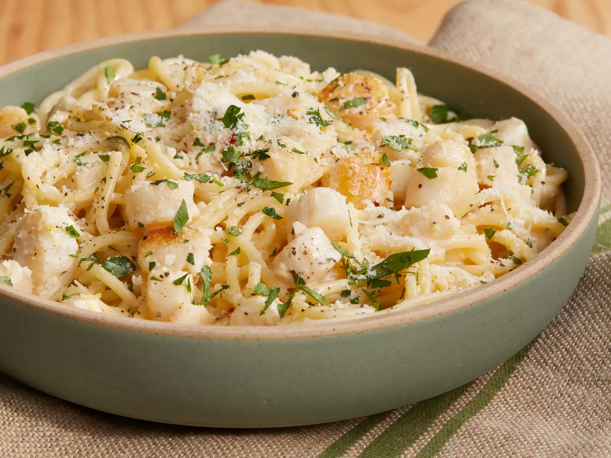

Creamy Bay Scallop Spaghetti

Description
This scallop pasta dinner with a creamy sauce is fast and easy. I cook the scallops a bit longer than many chefs, but that gives the dish more flavor and they're still tender and moist. I think you'll agree, the sherry sauce benefits significantly from the longer cook time.
Ingredients
- 8 ounces uncooked thick spaghetti
- 1 tablespoon vegetable oil
- 1 pound bay scallops
- 2 tablespoons butter
- 3 cloves garlic, minced
- 2 teaspoons grated lemon zest
- 1 pinch red pepper flakes
- ⅓ cup dry sherry
- 1 cup heavy cream
- salt and pepper to taste
- 1 lemon, juiced
- 2 tablespoons chopped Italian parsley, divided
- Freshly grated Parmigiano-Reggiano cheese, for serving